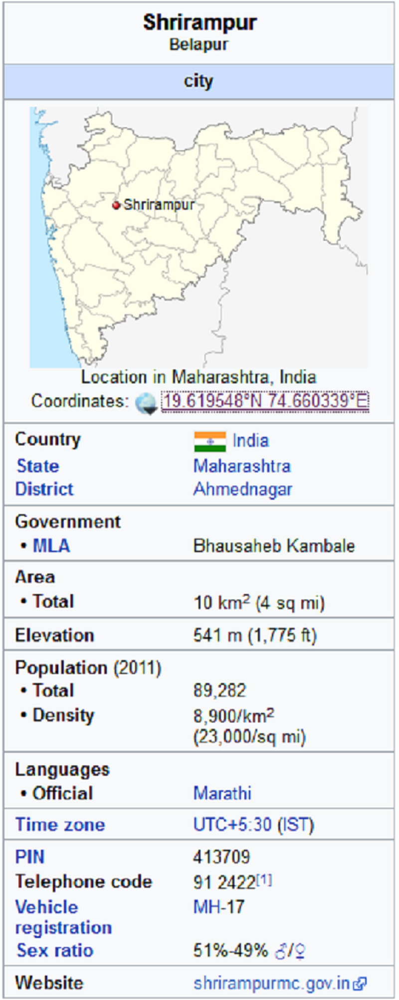
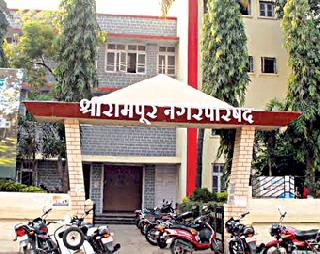
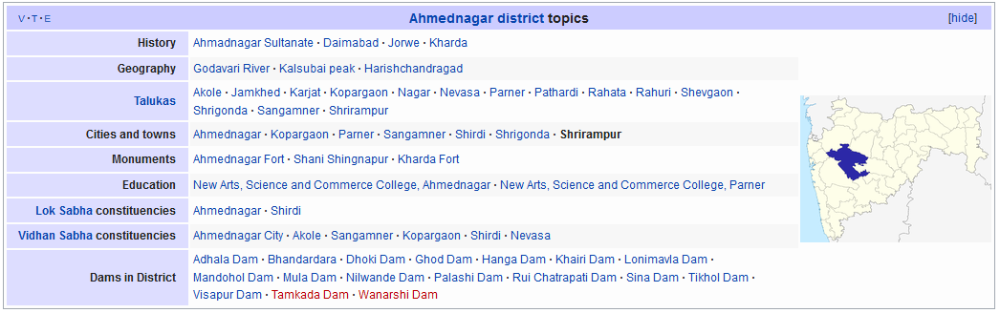

Right click on image to view full screen
Shrirampur
From Wikipedia, the free encyclopedia
This article is about the city.

Shrirampur city
Shrirampur is a city and a municipal council in Ahmednagar district in the Indian state of Maharashtra situated at 19.62 N, 74.66 E in western Maharashtra.Shrirampur is second biggest city in Ahmednagar District. Shrirampur is considered as one of the major producers of sugarcane in the sugarcane belt in the state of Maharashtra.
Shrirampur हे भारताच्या महाराष्ट्र राज्यातील अहमदनगर जिल्ह्याच्या Shrirampur तालुक्यातील एक शहर आहे.Shrirampur हे अहमदनगर जिल्ह्यातील अहमदनगर नंतर दूसरे मोठे शहर आहे. बागायत आणि सुपीक जमीन येथील अर्थव्यवस्था समृद्ध करते.
Shrirampur हे राहता तालुक्याच्या विभाजना अगोदर सर्वात जास्त साखर कारखाने असलेले भारतातील शहर होते. ऊस व कांदा हे येथील प्रमुख पिके आहेत. Shrirampur तालुक्यात सध्या ५२ गावांचा समावेश आहे. अहमदनगर जिल्ह्याचे विभाजन झाल्यास Shrirampur हे जिल्ह्याचे मुख्यालय असेल. श्रीरामपूरला जिल्हा होण्यास लागणाऱ्या सर्व प्रशासकीय इमारती उपलब्ध असून श्रीरामपूरला स्वतंत्र आर टी ओ कार्यालय, जिल्हास्तरीय वरिष्ठ न्यायालय व अप्पर जिल्हा पोलीस कार्यालय आहेत. जिल्ह्याच्या दृष्टीने हवी असणारी उत्तम वाहतूक व्यवस्था व रेल्वेची उपलब्धता आहे. नवीन कार्यालयांसाठी असणारी विपुल प्रमाणात सरकारी जागा आहे.Shrirampur मध्ये खंडाळा येथे नवसाचा गणपती आहे.रम्य निसर्ग आणि मोरांसाठी प्रसिध्द आहे. Shrirampur मध्ये दत्तनगर येथे एम आय डी सी आहेत. Shrirampur चे भोगोलिक स्थान उत्तर जिल्ह्यातील सर्व तालुक्यांना सोयीस्कर असे आहे.त्यामुळे नागरिकांचा वेळेचा अपव्यय होणार नाही. Shrirampur चेक टाउन प्लॅनिंग उत्तम असून बस स्टॅन्ड आणि रेलवे स्टेशन २ मिनिटाच्या अंतरा वर आहे. उत्तम नागरीव्यवस्था, स्वच्छता आणि मुबलक पाणीपूरवठ्यामुळे स्थानिकांचे जीवनमान चांगले आहे.अद्ययावत सोयींनी परीपूर्णसरकारी व खाजगी दवाखाने आहेत.Shrirampur चे हवामान हे उत्तम आहे व शेती साठी प्रवरा नदी व त्या वरील पाण्याचे योग्य नियोजन आहे. शेत जमीन सुपीक असल्यामुळे शेतकरी सुखी समाधानी आहे.Shrirampur मध्ये नगरपरिषद आहे.
Culture
Hinduism is the most commonly practiced religion in Shrirampur, but still Mosque, Gurudwara, Jain temples, Church and other religious buildings are also found in the city. The city is been named Shrirampur after the most prominent temple, Ram temple located on Nevasa Road, along with Hanuman's Temple. The Navratri festival is the main attraction in Shrirampur city. The biggest and the oldest Mosque in Shrirampur is "Jama Masjid" Located near the railway station under the bridge. Peoples of all religion celebrate Ramnavami and Sayyed Baba urus together for more than 5 days, in spite of this type of bringing harmony to the social life of Shrirampur, the city had suffered from some riots too.
Important Religious buildings of Shrirampur - A very good model of communal and religious harmony is found in Shrirampur. As the name indicates, it is known for Shri Ram Mandir located in the heart of the town. The annual festival for the people is Ramnavami, a celebration of the birth of Bhagwan Shri Ramchandra. At the same time, the Urus (Holy Gathering) of Sayyed Baba is celebrated at Sayyed Baba Dargah Shrine situated in the city. Recently a beautiful minar was built near Jama Masjid. Both these festivals are well attended by people from surrounding places. People from the nearby villages and the town itself come and pray at the temple and shrine during these auspicious days. Fireworks take place on an inaugural day. This is the festival when people come and enjoy themselves. Christian pilgrims in the area visit the village for the Feast of the Blessed Virgin Mary (Marathi: Matmauli yatra), celebrated on the second Saturday of September. The Jesuit priest in the village started the celebration in 1949 to help local devotees who could not afford to go to the celebration in Bandra, Mumbai. Nowadays Haregaon is often described as the Pandharpur of the Marathi-speaking Catholics in the state, as nearly 4,00,000 devotees from Ahmednagar, Pune, Nashik, Aurangabad district and Mumbai attend the feast every year.
Gangagiri Maharaj Samadhi Sthal - This is a holy place situated at Sarala Bet (an island), just 25.8 km from Shrirampur, which comes under Shrirampur Taluka & Ahmednagar district from 1996. The River Godavari gets divided into 2 streams here and further, it rejoins itself, thus forming a beautiful island. The famous saint Gangagiri Maharaj established here an Ashram years ago. Here all devotees celebrate Punyatithi and Harinaam Saptah every year. Gangagiri Maharaj took Samadhi in 1902. After Gangagiri Maharaj, there were legal heirs, Harigiri, Nathgiri, Someshwargiri, Narayangiri and now from 2009 Mahant Ramgiri Maharaj.
Climate
Shrirampur has a tropical wet and dry climate with average temperatures ranging between 20 to 42 °C (68 to 108 °F).
Shrirampur experiences three distinct seasons: Summer, Monsoon and Winter. Typical summer months are from March to May, with maximum temperatures ranging from 30 to 40 °C (86 to 104 °F). The warmest months in Shrirampur are April and May, the city often receives locally developed heavy thundershowers in the month of May (although humidity remains high). City experiences rise in atmospheric pressure in mid October when temperatures ranges from 35 to 40 °C (95 to 104 °F).
Transport
Shrirampur is well connected by Rail and Road to other parts of country. Shrirampur enjoys central location in Western Maharashtra. All major cities in Maharashtra lie within a radius of 500 km (310 mi). Shrirampur can be conveniently reached from any part of India by road. The town is situated between the Shirdi & Shani Shingnapur, both the towns are situated within 30 and 45 km (19 and 28 mi) radius with Shrirampur being Centrally located. The bypass highway from Shirdi to Shingnapur is going from the Shrirampur city. Shrirampur city has central bus stand and bus depot of MSRTC. Shrirampur has regular buses to Mumbai, Pune, Ahmednagar, Nashik, Aurangabad, Nanded, Kolhapur, Surat, Indore.Also has Air conditioned buses to Shivajinagar Pune, Aurangabad and Ahmednagar.
Railway
Nearest railway station of Shrirampur is Belapur railway station code is BAP.By railway network,Belapur station is well connected to Mumbai, Pune, Bengaluru, Mysuru, New delhi, Jammu tavi, Ahmedabad, Nagpur, Howrah and Patna.
Economy
Arid dry climate and well established irrigation system makes Sugarcane an ideal cash crop. Shrirampur is considered as one of the major producers of sugarcane in the sugarcane belt in the state of Maharashtra. The first sugar mill of India known as "The Brandy Factory" was established in Haregaon by the Britishers in the pre- independence era of 1923. After independence, Co-operative movements were raised in the surrounding. In 1950, The first co-operative sugar mill in India was established by the farmers in Pravaranagar (Shrirampur Taluka). This co- operative movement was appreciated by the whole country. For this Great movement, the Founder Shri. Vitthalrao Vikhe Patil was felicitated with "PADMASHREE" by The Former Prime Minister Jawaharlal Nehru. Over 10 sugarcane industries surrounding the town make for a very industrious economy. Due to recent setbacks in the sugar industries the people from these areas are turning to other cash crops. The credit of this goes to Mr. Wilson who due his foresight constructed a Dam at Bhandardara, the water through the canal web helps to irrigate the entire north part of Ahmednagar district specially for the Shrirampur region. It has Shrirampur MIDC (Industrial Area), area which is well developed for industries. Prabhat dairy is one of the biggest industry in Shrirampur and surrounding area. Due to scarcity of water farmers are moving to agriallied business like poultry, goat farming where government and some private organisations are helping the farmers to venture into this lucrative and alternate earning resources. KVK ( Krishi Vidnyan Kendra, Loni) organisations train and help farmers and arranges seminars to help them understand new ways and techniques adapted in modern-day agribusiness. Shrirampur is one of the biggest automobile market place in district. Shrirampur has many automobile showrooms and spares stores.Shrirampur is being biggest emerging textile, jewellery and grocery market in northern region of Ahmednagar district. People from neighborhood towns frequently visits Shrirampur for shopping.
Notable residents
Govindrao Adik
Ramrao Adik
Zaheer Khan, Indian cricketer
C. Ramchandra Music composer
Annasaheb Shinde Agriculture minister
Karamshi Jethabhai Somaiya
